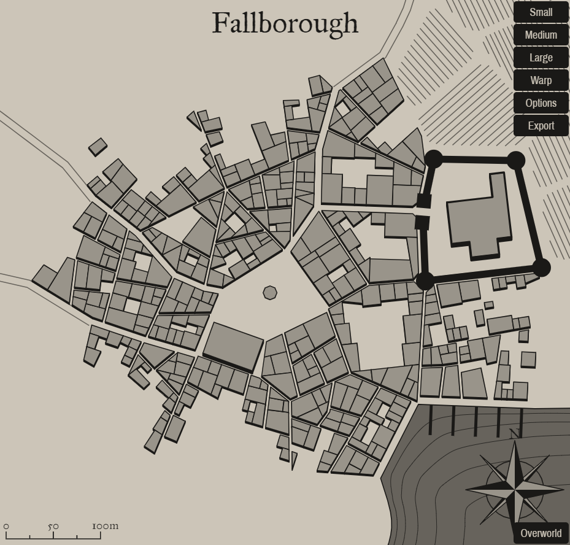

Fallborough
A mystical settlement in a fantastical world

Background
Add background flavor.
1
Settlement Features
Fallborough is a small city 5,001-10,000 located in the coastal region of the areas greater temperate deciduous forest. The settlement seems to be relatively young. Fallborough and the local surroundings are under the control of a secret syndicate.
Demographics
- Name: Fallborough
- Real population: 6393
- Population: Small City 5,001-10,000
- Number by race: Human 40%, Dwarf 10%, Elf 10%, Gnome 10%, Halfling 10%, Half-elf 15%, Half-orc 5%,
- Wealth: 6
- Age: 6
- Alignment: 4
- Government Type: A Secret Syndicate - An unofficial or illegal group like a thieves’ guild rules the settlement—they may use a puppet leader to maintain secrecy, but the group members pull the strings in town.
- Settlement Trait: Adventure Site
- Number Of Wards: 18
- Number of Districts: 4
Industry and Economy
- Primary Raw Materials: Fishing
- Shops of Note: Carpentry: General, Cobbler, Toymaker, Lumber Mill, Cartography, Glassblower, Locksmith.
- Number Of Inns/Taverns: 2
- Inns/Taverns of Note: The Silver Horse and Rancid Cutler Tavern, Flaming Heron Pub, The Loud Sailor Inn, The Red Rabbi Inn.
Districts
Remmest Side
Get desc
Lower East Fisp
Get desc
South Naippais
Get desc
Citrine Woods
Get desc
Taverns / Inns
The Silver Horse and Rancid Cutler Tavern
Location
South Naippais
Description
The inn is a two-storey stone-walled building, with a heather-thatched roof and a smooth stone floor. Accommodations consist of wooden cots near the hearth. The inn was rebuilt recently after a devastating fire.
Innkeeper
Bob
Menu
- Smoked Salmon Salad (4 sp)
- Grilled Fillet of Salmon (6 sp)
- Pork liver, Seaweed, Succotash, Rice, Fruitcake (2 sp).
- Roasted Cabbage, Mug of Stout (4 cp)
- Soft cheese, Pomegranite, Corn pone (8 sp).
Flaming Heron Pub
Location
Remmest Side
Description
The tavern itself is packed. Tourists seem to be the primary clientele here, which often leads to exciting evenings. Several long tables are occupied by, what looks like couples, lone travellers and anybody else who enjoys great company. The other, smaller tables are also occupied by people who are singing and dancing, occassionaly pulling an unsuspecting waitress amidst their dancing group. Even most of the stools at the bar are occupied, though nobody seems to mind more company.
Innkeeper
Bob
Menu
- Stewed Mutton and Whey Cheese, Tankard of Perry (8 cp)
- Chicken Liver Pate and Bread (3 sp)
- Smoked Fresh Trout Fillets (4 sp)
- Roasted Cabbage, Mug of Stout (4 cp)
- Pottage, Mug of Perry (4 cp)
The Loud Sailor Inn
Location
Citrine Woods
Description
You did hear rumors about this tavern, supposedly it's infamous for something, but for the life of you you can't remember what for. Though juding by the dirt and unhygienic circumstances, it's probably food poisoning.
Innkeeper
Bob
Menu
- Grilled Fillet of Salmon (6 sp)
- Pork chop, Chicken eggs, Black beans, Apple (2 sp).
- Roasted Mutton and Dried Turnip, Tankard of Mead (10 cp)
- Smoked Fresh Trout Fillets (4 sp)
- Stuffed Mushrooms with Thyme and Creamcheese (4 sp)
The Red Rabbi Inn
Location
Remmest Side
Description
It's impossible to see through the closed windows, but the quiet sorrow from within can be felt outside.
Innkeeper
Bob
Menu
- Cheese rolls with a filling of nuts, honey and vegetables (6 cp)
- Pork liver, Seaweed, Succotash, Rice, Fruitcake (2 sp).
- Braised Oxtails with Mushrooms (6 sp)
- Mutton, Lettuce and Tomato (5 sp)
- Roasted Mutton and Dried Turnip, Tankard of Mead (10 cp)
2